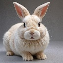

הנחיה:
"הגדל את התמונה פי 4, השתמש במודל אולטרה חד"
תוצאה:
תכונת הרזולוציה הגבוהה ב-AiCasso עוסקת בשיפור התמונות שלך. אתה רק צריך לומר איך אתה רוצה לשפר את התמונה שלך, ו-AiCasso ידאג לשאר. בין אם אתה רוצה לחדד פרטים או לתת לתמונה כולה דחיפה, זה מאוד קל לשימוש.
"הגדל את התמונה פי 4, השתמש במודל אולטרה חד"
תוצאה:
אם אתה רוצה להוסיף קצת יותר שליטה על איך התמונה שלך משופרת, הנה כמה אפשרויות נוספות שאתה יכול לשחק איתן:
זכור, האפשרויות הללו הן לחלוטין אופציונליות! אתה לא צריך להתעסק איתן אם אתה לא רוצה. פשוט תאר מה אתה רוצה, ו-AiCasso ימצא את הדרך הטובה ביותר לגרום לזה לקרות. ואל תדאג להיות מושלם עם המילים שלך—AiCasso מבין אותך!